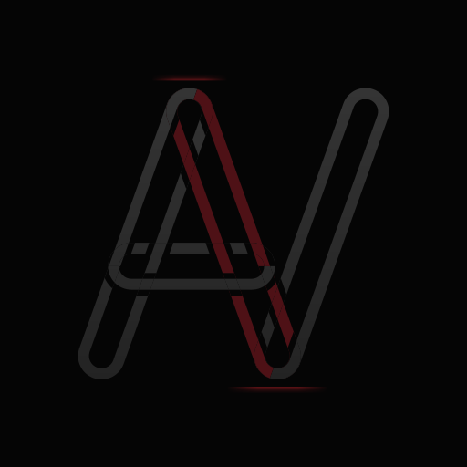

VolumeBars
Highlights unusually high volume and delta on the candle. Compare buying and selling activity with the price response.

AnthonysVaultANTHONYSVAULT
VolumeBars and LiveBook, historical session replay, Sierra Chartbooks and setup support, and a private Discord community.
For futures traders who use order flow, volume, and value to study the market.
Explore membership · $100/month ↗VOLUMEBARS / LIVEBOOK
September 1 and September 15, 2026. Dates and contracts are labeled in the film. These are animated reconstructions of recorded activity; the native Sierra Chart layout may differ. Selected historical examples do not establish trading performance.
The first sequence shows three consecutive selling bars with 55,366 contracts in total volume. The LiveBook sequence shows a 517-contract buy sweep and returning displayed offers; it does not identify an individual trader or order. The final sequence follows a gold bar with 18,887 contracts, its bid/ask footprint, cumulative delta, and developing volume profile.
VolumeBars and LiveBook for your Sierra Chart setup.
Review price, volume, liquidity, and value together.
Chart setups and personal installation help from Anthony.
Advanced market study and discussion in the private Discord.
INTERACTIVE PREVIEW
Start with VolumeBars across the full session.
Turn on more tools as you explore.
Use “Review from open” to study without revealing the next bars.
Footprints, tape, book samples, and profiles follow the selected session and replay time.
Three selected ESU26 sessions: September 1, 3, and 4, 2026. The workspace supports manual replay and setup review. These examples do not establish trading performance.
VolumeBars colors come from saved Sierra Chart exports. Footprints show recorded bid × ask volume where the bar boundary reconciles. The CVD trace is cumulative delta; CvdBars is a separate study still in development.
Book snapshots are sampled every five seconds. The tape displays individual recorded RTH prints of 10+ contracts, with size and side filters. Sweep and burst markers use grouped recorded executions. Trade size does not identify a participant.
Custom composites use completed five-minute intervals. All sample times are Eastern. The web reconstruction can differ from the native Sierra studies.
PRIVATE SIERRA CHART STUDIES
Use the studies on your own charts.
Explore their recorded activity in the workspace above.
Highlights unusually high volume and delta on the candle. Compare buying and selling activity with the price response.
Displays resting liquidity beside price. Follow book activity, sweeps, and bursts as the market trades through a level.
PRIVATE DISCORD
Discuss the tools, study historical sessions, and develop a clearer understanding of order flow and market structure.
Study volume, absorption, liquidity, and the price response. Review how a setup develops within the wider session.
Access dealer charts, levels, and options context in Discord. Dealer research is delivered by the bot.
Compare developing value, prior value, and your own anchored composites in the Research Workspace.
MEMBERSHIP
Try the selected replay sessions above now. Member-only library access and the Discord Activity are being connected. CvdBars remains in development.
Monthly membership. Cancel anytime.
Join AnthonysVault Secure checkout with MemberfulAlready a member? Sign inGETTING STARTED
New members receive chart setups and help installing the private Sierra Chart studies.
Join through Memberful, then connect your Discord account from your member account.
Send Anthony your Sierra Chart username in Discord so he can enable access to the private studies.
Get the chart setups and personal setup support from Anthony. Bring your questions to the Discord community.
Sierra Chart and an appropriate market-data subscription are required and purchased separately.